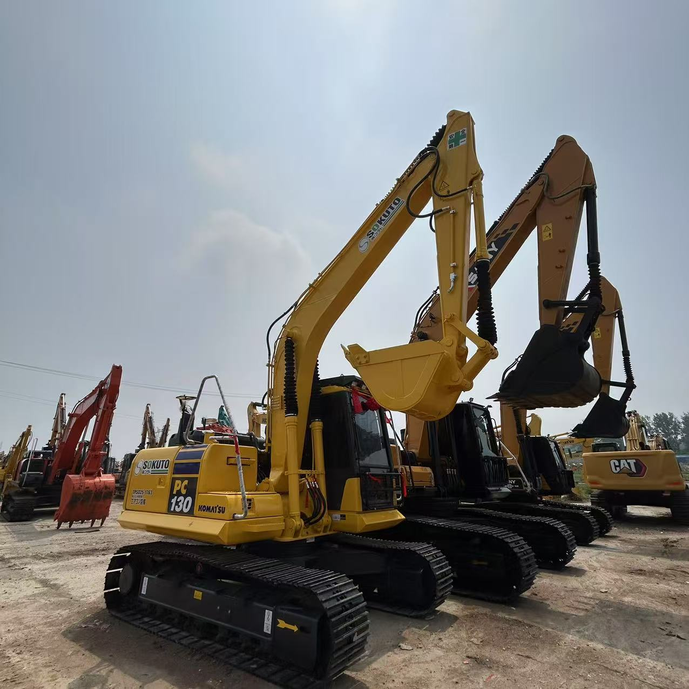

Refurbished Komatsu PC130 Excavator
The Komatsu PC130 is a mid-size hydraulic excavator that offers a balanced combination of power, efficiency, and maneuverability. Known for its superior digging performance, fuel efficiency, and operator comfort, the PC130 is a popular choice for a variety of tasks, including construction, landscaping, and excavation work in urban areas or other confined spaces. Whether you are working in a demolition site, trenching, or handling material, the Komatsu PC130 is a reliable, durable machine that can handle challenging tasks with ease.
Honestly, it's almost impossible to buy a brand new excavator from China. They either don't exist or are made in China. If a Chinese seller tells you their Caterpillar/Komatsu/Volvo/Kobelco/Hitachi is brand new, they're lying. Therefore, a refurbished excavator is your best bet.

Opting for a refurbished Komatsu PC130 provides cost savings while maintaining high performance and operational efficiency. Refurbished excavators undergo thorough inspections and upgrades, ensuring that they meet the original manufacturer's standards. This makes a refurbished Komatsu PC130 an excellent choice for those looking for a reliable workhorse without breaking the bank.
Here are the detailed specifications for a refurbished Komatsu PC130-8 excavator:
Operating Weight and Dimensions
- Operating Weight: 12,800–13,500 kg
- Overall Length: ~7.6–7.9 meters
- Overall Width: ~2.49–2.8 meters
- Overall Height: ~2.8–3.0 meters
- Tail Swing Radius: ~2.2–2.4 meters
- Ground Clearance: ~440 mm
- Track Width: 500–600 mm standard
Engine and Powertrain
- Engine Model: Komatsu SAA4D95LE-5 (Tier 2 or Tier 3 compliant)
- Rated Power Output: ~72–75 kW (97–100 hp) @ 2,000 rpm
- Maximum Torque: ~400–450 Nm
- Fuel Tank Capacity: ~260–280 liters
- Travel Speed: 3.5–5.5 km/h
- Swing Speed: ~10 rpm
- Gradeability: Up to 70% (35°)
Hydraulic System
- Main Pump Type: Closed Center Load Sensing (CLSS) axial piston pumps
- Flow Rate: ~2 × 160–180 L/min
- System Pressure: Up to 31.5–34.3 MPa
- Hydraulic Oil Capacity: ~220–240 liters
- Boom Cylinder Bore: ~120 mm
- Arm Cylinder Bore: ~105 mm
- Bucket Cylinder Bore: ~95 mm
Performance Metrics
- Bucket Capacity: 0.5–0.65 m³ (SAE heaped)
- Max Digging Depth: ~5.5–5.7 meters
- Max Reach (Horizontal): ~8.8–9.1 meters
- Max Dump Height: ~5.8–6.0 meters
- Bucket Digging Force: ~105–110 kN
- Arm Digging Force: ~70–75 kN
Cab and Operator Features
- Cab Type: ROPS/FOPS certified
- Display: LCD monitor with diagnostics and fuel tracking
- Controls: Electro-hydraulic joysticks with customizable sensitivity
- Comfort: Air suspension seat, climate control, low vibration cab
- Visibility: Rear-view camera, LED work lights, wide glass area
Smart Features and Efficiency
- Fuel Efficiency: Auto idle, variable speed matching, and Eco mode
- Emissions Control:
- Tier 2 units: No DPF/SCR
- Tier 3 units: Improved combustion and EGR
- Telematics Ready: KOMTRAX system for remote diagnostics and fleet tracking
- Attachment Memory: Preset hydraulic settings for multiple tools
Attachments Compatibility
- Standard Bucket: 0.5–0.65 m³
- Optional Tools: Hydraulic breaker, compactor, grapple, ripper
- Quick Coupler: Hydraulic or manual options available
Refurbishment Scope
Refurbished PC130 units typically include:
- Engine Overhaul: Turbocharger, injectors, seals, cooling system
- Hydraulic Restoration: Pump recalibration, valve block testing, hose replacement
- Electrical Diagnostics: Monitor, sensors, wiring harness
- Cab Reconditioning: Seat, joysticks, HVAC, repainting
- Structural Repairs: Boom/bucket welding, bushing replacement, undercarriage rebuild
Overview of the Komatsu PC130 Excavator
The Komatsu PC130 is designed to meet the demands of the most challenging jobs. It is part of Komatsu's line of medium-sized excavators, offering the ideal balance of weight, performance, and versatility. The PC130 provides both excellent digging force and smooth control, making it ideal for applications that require precision and reliability.
Key Specifications of the Komatsu PC130
-
Operating Weight: Approximately 13,500–14,500 kg (29,700–32,000 lbs)
-
Engine Power: 74 kW (99 hp)
-
Max Digging Depth: 5.7 meters (18.7 feet)
-
Max Reach: 8.5 meters (27.9 feet)
-
Bucket Capacity: 0.45–0.7 cubic meters
-
Fuel Tank Capacity: 210 liters (55 gallons)
-
Travel Speed: 5.3 km/h (3.3 mph)
The PC130 is engineered for heavy-duty digging and lifting tasks, and its design allows it to perform efficiently in tight spaces while maintaining high digging capacity and reach.
Powerful Engine and Fuel Efficiency
One of the standout features of the Komatsu PC130 is its powerful yet fuel-efficient engine. This combination of performance and economy is a critical factor for construction companies and operators looking to optimize operating costs over the long term.
-
High Performance: The PC130’s 99 horsepower engine delivers impressive digging and lifting performance, making it an excellent choice for both light and medium-duty projects. Its engine provides ample power for a range of tasks, from trenching to material handling.
-
Fuel Efficiency: The PC130 is equipped with Komatsu’s advanced engine technology, which ensures that it consumes less fuel compared to older models with similar performance. This is particularly important for businesses looking to reduce fuel costs while maintaining high productivity.
-
Low Emissions: The PC130 complies with modern emissions standards, offering lower emissions than its predecessors. This makes it a more environmentally friendly choice compared to older, less efficient machines.
Advanced Hydraulic System for Optimal Performance
The hydraulic system in the Komatsu PC130 ensures smooth, efficient operation, making it ideal for tasks that require precision and power. Komatsu’s advanced hydraulic technology provides fast cycle times, precise control, and the ability to handle tough materials with ease.
-
Load-Sensing Hydraulics: The PC130 features a load-sensing hydraulic system, which adjusts the hydraulic flow based on the load. This maximizes fuel efficiency by ensuring that the system only uses as much power as needed for the job at hand.
-
Improved Digging and Lifting Force: The hydraulics on the PC130 provide superior digging and lifting force, making it suitable for a wide range of applications, including digging in tough soils, lifting heavy materials, and backfilling trenches.
-
Precision Control: The hydraulic system allows for smooth and precise operation, ensuring that operators can perform tasks such as grading, trenching, and lifting with ease and accuracy.
Compact Design for Tight Spaces
The Komatsu PC130 is designed to operate efficiently in confined spaces, making it a versatile choice for urban construction and projects where space is limited. Its compact design does not compromise its performance, and the machine’s maneuverability is a key benefit for operators working in restricted environments.
-
Narrow Width: With a width of approximately 2.5 meters (8.2 feet), the PC130 can navigate through narrow spaces without difficulty, making it ideal for work in cities, residential areas, or other congested locations.
-
Low Tail Swing: The low tail swing design of the PC130 allows it to work in tight spaces near walls, fences, or other structures without worrying about tail overhang. This makes the machine safer and more efficient in confined work areas.
-
Stability: Despite its compact size, the PC130 is highly stable, providing the necessary balance for working on slopes, uneven ground, and other challenging surfaces.
Operator Comfort and Safety Features
The Komatsu PC130 is built with operator comfort and safety in mind, ensuring that workers can perform their duties efficiently without experiencing fatigue or compromising their safety. The machine’s ergonomic cabin, safety features, and intuitive controls make it easy to operate for extended periods of time.
-
Spacious and Comfortable Cabin: The PC130 is equipped with a spacious operator cabin that is designed for comfort. The adjustable seat, air conditioning, and user-friendly controls help reduce operator fatigue and increase productivity.
-
Excellent Visibility: The design of the cabin ensures that the operator has excellent visibility of the work area. This is especially important when working in confined spaces or performing tasks that require precise control.
-
Safety Features: The PC130 is equipped with safety features such as rollover protective structures (ROPS), falling object protective structures (FOPS), and anti-slip steps, ensuring a safe working environment for the operator.
Benefits of Choosing a Refurbished Komatsu PC130
When choosing a refurbished Komatsu PC130, you gain access to a high-performance excavator at a lower price point. Refurbished units provide all the power, reliability, and versatility of a new machine while offering substantial cost savings.
-
Lower Cost: Refurbished models are typically 30-40% less expensive than new machines, allowing you to save money while still obtaining a reliable, high-performing excavator.
-
Refurbishment Process: A refurbished PC130 goes through an extensive inspection and repair process. Any worn or damaged parts are replaced, and the machine is tested to ensure that it meets the manufacturer’s performance standards.
-
Warranty and Support: Many refurbished Komatsu PC130 units come with a warranty, providing added peace of mind and ensuring that you can rely on the machine for your projects.
-
Sustainability: Purchasing a refurbished PC130 is an environmentally responsible choice, as it reduces the need for new manufacturing and helps extend the life of valuable equipment.
Maintenance Tips for the Komatsu PC130
To maximize the lifespan and performance of your Komatsu PC130, it’s important to perform regular maintenance. Here are some essential maintenance tips:
-
Inspect Hydraulic Fluids: Regularly check hydraulic fluid levels and replace filters as needed. Keeping the hydraulic system in good condition ensures smooth operation and reduces the risk of system failure.
-
Monitor the Undercarriage: The undercarriage is critical for stability and traction. Inspect tracks, rollers, and sprockets regularly for wear and replace them when necessary.
-
Engine Care: Keep an eye on the engine’s performance by checking oil levels, coolant, and air filters. Regular oil changes help extend engine life and maintain fuel efficiency.
-
Check the Cab and Safety Features: Ensure that the operator’s cabin is clean and that safety features like seatbelts and ROPS/FOPS are in good working order.
Conclusion
The Komatsu PC130 is a powerful, efficient, and versatile excavator that offers excellent performance in a variety of applications. With its powerful engine, advanced hydraulic system, compact design, and operator-friendly features, the PC130 is an ideal choice for projects that require a reliable, high-performance machine in tight spaces. A refurbished Komatsu PC130 allows you to enjoy all the benefits of this top-tier excavator at a fraction of the cost of a new one, making it a smart investment for any business or contractor looking to boost their productivity and reduce operational costs.
Our Commitment
- 2 years / 4000 hours warranty.
- EPA certified.
- No sweatshop labor.
Contacts

- [email protected]
- Youtube Instagram Facebook
- Navigation: G206 (Sishu Bridge) in Changfeng County, Hefei City, Anhui Province, 200 meters north to the east